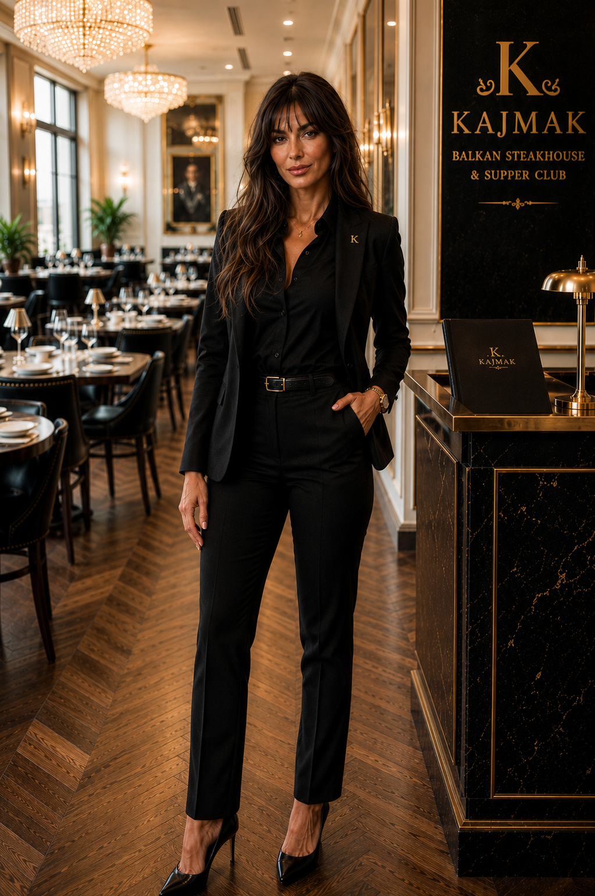
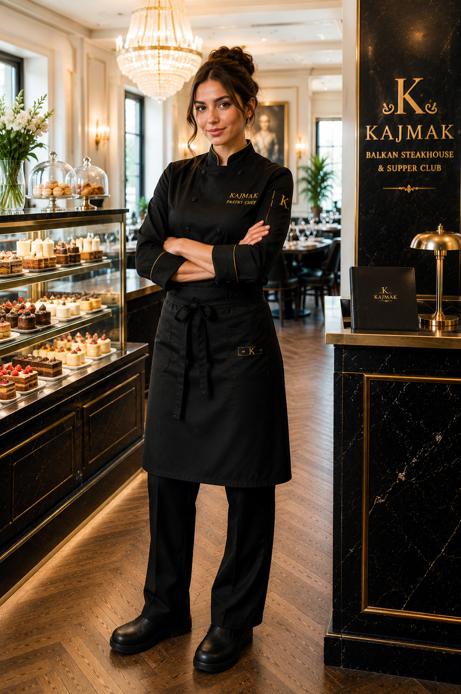

The Dining Room
Warm private lunches shift into candlelit steakhouse service.

New York City
Fire-grilled steak, rakia, premium shisha, Balkan soul, and late-night New York energy.
The Concept
KAJMAK is a luxury Balkan steakhouse and supper club built around fire, flavor, rakia, premium shisha, and the unmistakable energy of a Balkan night out. Dinner begins with prime steaks, meze, grilled breads, and large-format feasts. As the evening unfolds, the room shifts into a late-night supper club with music, bottles, shisha service, and celebration.
Every table is designed for sharing: kajmak, ajvar, live-fire meats, champagne, rakia, and the kind of room that gets better as the night deepens.

Day to Night
By day, KAJMAK is refined, warm, and elegant. By night, it becomes darker, louder, golden, and alive.
Warm private lunches shift into candlelit steakhouse service.

Lights dim, music opens up, and tables become celebrations.


Golden, late, Balkan, and built for the table.
Food Preview
Balkan classics, prime steaks, live-fire cooking, and generous plates made for the table.

Prime tartare, crudo, oysters, and meze.

Lepinja, pogača, burek, and kajmak butter.

Shopska, roasted peppers, tomato, and herbs.

Bone marrow, sarma bites, octopus, and cheese.

Ćevapi, pljeskavica, lamb chops, and mixed grill.

Prime cuts, dry-aged classics, and tomahawk service.
Signature Experiences
KAJMAK is built for moments: tableside carving, fire presentations, rakia flights, premium shisha, champagne, birthdays, private dinners, and late-night celebration.
Large-format bone-in ribeye carved tableside with kajmak butter and fire.
A curated flight of Balkan spirits served as a ritual for the table.
Mixed grill, sarma, shopska, ajvar, kajmak, lepinja, and potatoes.
Late-night shisha service for VIP tables, private events, and supper club evenings.
Private tables, champagne, premium spirits, and a dedicated host.
The music rises and the steakhouse becomes a Balkan celebration.
Shisha Service
The shisha ritual is part of the late-night KAJMAK rhythm: smooth pulls, polished table service, Balkan music, and a room built for staying after dinner.
Choose classic, fruit, mint, and reserve blends for VIP tables, birthday nights, private events, and supper club evenings.
Drinks Preview
Signature cocktails, Balkan wine, premium champagne, rakia served with ceremony, and shisha service for late-night tables.
Team
Managers, chefs, bartenders, and late-night people from across the Balkans, each bringing a piece of home to the KAJMAK floor.

General Manager
Raised in Belgrade kafanas, Milan runs the room with old-school calm and a steakhouse eye for detail.

Floor Manager
From Plovdiv, Elena learned hospitality at family weddings where every guest left fed, toasted, and remembered.

Executive Chef
A Novi Sad cook with butcher roots, Dragan builds the menu around smoke, kajmak, and generous plates.

Grill Master
Blerim came from Prizren with a live-fire discipline shaped by lamb, coals, and long family Sundays.

Head Bartender
Luka grew up near Split and mixes rakia, citrus, herbs, and smoke like he is setting a table.

Pastry Chef
Ivana brings Sofia bakery memories to the dessert station, turning walnut, honey, and cream into quiet finales.

Resident DJ
Born in Sarajevo, Armin reads the room from dinner pulse to Balkan late-night celebration.

Maitre d'
Vesna came from Skopje with a gift for names, coats, table timing, and impossible Saturday nights.

Maitre d'
Ana's Zagreb polish shows in every greeting, from first-time diners to the regulars who arrive late.
Gallery
Reservations
Dinner, rakia, shisha, fire, and the energy of a Balkan night in New York.